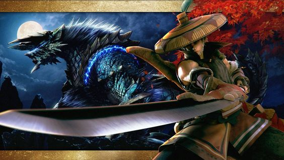
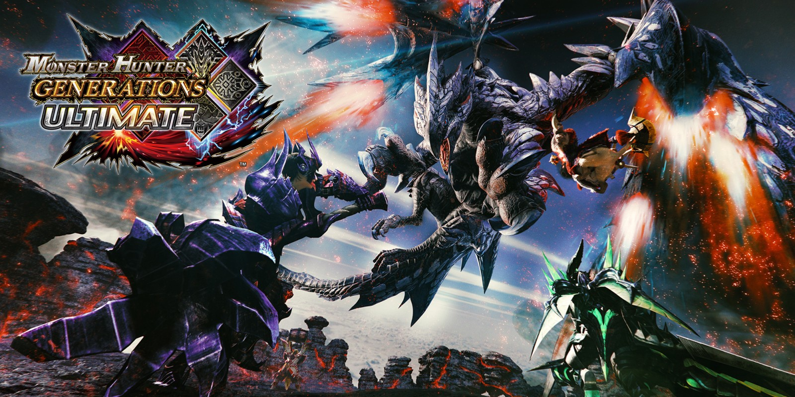
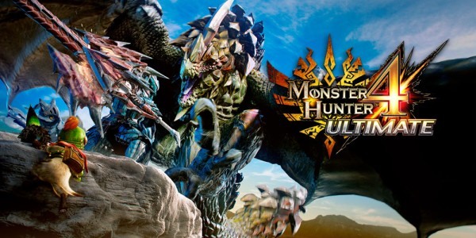
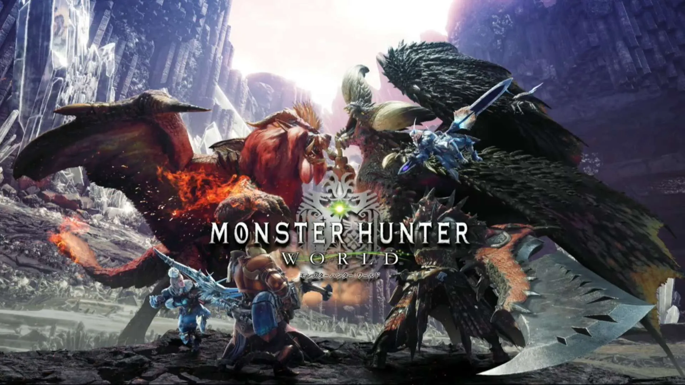
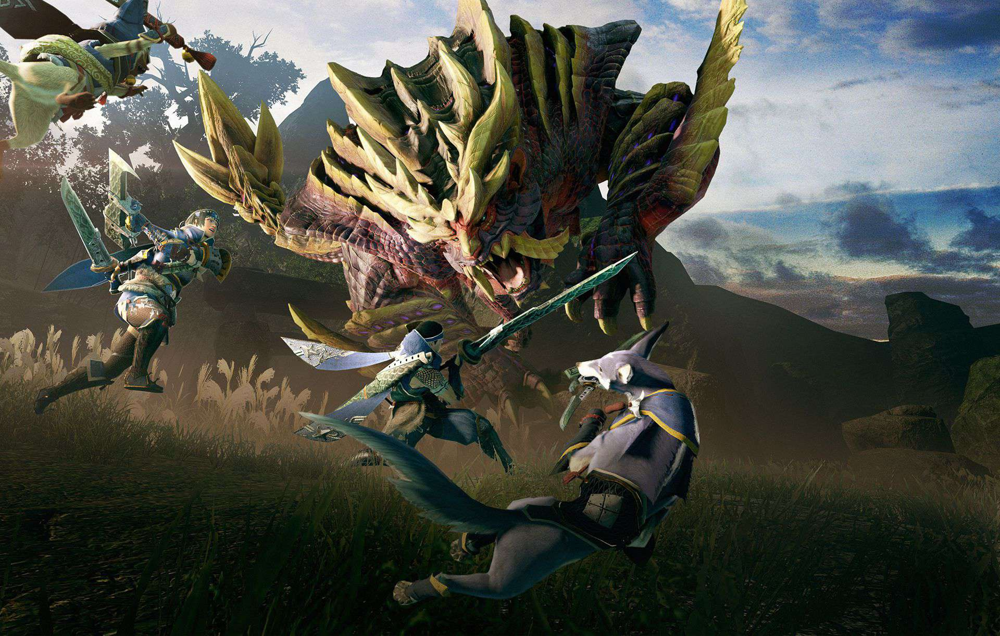

Eres nuevo en los juegos de Monster Hunter?
Como resumen rapido,La saga Monster Hunter es una serie de juegos en los que tendras que eliminar a una gran cantidad de monstruos para mejorar tu equipamiento y convertirte en el Cazador de mayor rango y renombre de tu aldea,explora distintos ecosistemas en busca de ese monstruo capaz de plantearte el desafio que buscas.
Juegos que podrias jugar(Esta lista esta hecha a criterio personal y no se incluyen spin-off o juegos no canon)
1st and 3rd Gen(Gameplay clasico)
Monster Hunter Freedom Unite-Platform: PlayStation Portable.
-Release date: 2008
 Monter Hunter 3rd Portable(Only japan )
Monter Hunter 3rd Portable(Only japan )
-Platform: PlayStation Portable and PlayStation 3.
-Release date: 2010
 Monster Hunter Generations Ultimate
-Platform: Nintendo 3ds and Nintendo Swicth.
-Release date: 2015
4th and 5ft Gen(Gameplay moderno)
Monster Hunter 4 Ultimate-Platform: Nintendo 3ds.
-Release date: 2013
 Monter Hunter World-Platform: PlayStation 4, PlayStation 5 Xbox One, Xbox Series and PC.
-Release date: 2018
 Monster Hunter Rise-Platform: PlayStation 4, PlayStation 5, Xbox One, Xbox Series, Nintendo Switch y PC.
-Release date: 2021
La saga Monster Hunter suele dividirse en 2 categorias o tipos de juego
Gameplay clasico:
Se refiere a una jugabilidad mas lenta y tosca debido a limitaciones de la epoca y el concepto que se tenia de la saga en ese momento.Recomendable para jugadores veteranos debido a que la ausencia de las mecanicas de los juegos actuales lo que puede generar una experiencias frustrante para aquellos que probaron entregas mas actuales.
Gameplay moderno:
Alta movilidad y amplia cantidad de movimientos acrobaticos que facilitan el desplazamiento de los cazadores tanto para explorar el mapa como para cazar monstruos,lo cual podria decirse que facilita el gameplay para abarcar el mayor publico posible.Perfectos para aquellos que quieran adentrarse en la saga o tambien para los mas veteranos